정보통신기사(구) (2003-03-16 기출문제)
1과목: 디지털 전자회로
1. 다음 Karnaugh도를 간략화 한 결과는?
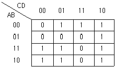
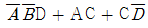
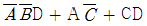
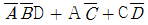
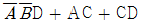
(정답률: 37%)

2. 다음 연산증폭기 회로에서 입출력 특성은? (단, 연산증폭기 A1,A2와 다이오우드 D1,D2는 이상적이다.)
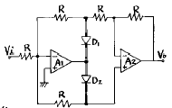
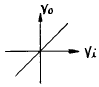
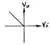
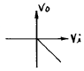
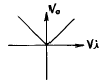
(정답률: 알수없음)
3. 다음 중 발진주파수가 가장 안정적인 발진기는?
- 수정발진기
- 윈브리지발진기
- 이상형발진기
- 음향발진기
(정답률: 알수없음)
4. 그림과 같은 스위칭용 슈미트트리거 회로에서 S/W를 OFF시키면 +5[V]로 충전하기 시작할 때의 시정수는? (단, R1=100[Ω ], R2=10[㏀], C=3.3[㎌])
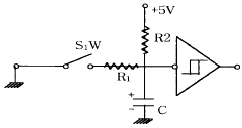
- 0.33〔㎳〕
- 3.3〔㎳〕
- 33〔㎳〕
- 330〔㎳〕
(정답률: 알수없음)
5. 논리회로를 구성하고자 할 때 IC에 내장되어 있는 AND, OR, NAND, NOR, NOT, X-OR, F/F 등의 논리소자 중에서 선택적으로 퓨즈를 절단하는 방법으로 사용자가 직접 기록(write)할 수 있는 PAL 또는 PLA와 같은 IC는 다음 중 어디에 속하는가?
- PLC
- PLD
- PLL
- RAM
(정답률: 알수없음)
6. 그림의 회로에서 Vo을 옳게 표현한 것은? (단, K = R2/R1 = Rb/Ra)
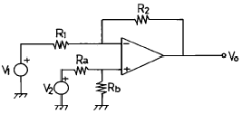
- K(V1 + V2)
- -K(V1 + V2)
- K(V1 - V2)
- -K(V1 - V2)
(정답률: 알수없음)
7. 다음의 자기 바이어스회로(self-bias)에서 Ic 의 Ico에 대한 안정계수 S의 이론적 최소치는 어느 때인가? (단, 1+β > RB/RE, RB = R1/R2 이다.)
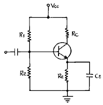
- RB/RE → 100일때
- RB/RE → 0일때
- RB/RE → ∞일때
- RB/RE → 1+β 일때
(정답률: 알수없음)
8. B급 SEPP 출력회로에서 10[W]의 출력으로 16[Ω ]의 스피커를 동작시키고자 한다. 여기에 같은 전원을 2개 사용코자 할 때, 각 1개의 전원 전압은 얼마로 하여야 하는가 ? (단, 출력의 여유는 25[%]가 있어야 한다.)
- 10[V]
- 20[V]
- 40[V]
- 60[V]
(정답률: 알수없음)
9. 전원의 평활회로에서 쵸크코일입력형에 비해 콘덴서입력형의 장점은?
- 출력직류전압이 크다
- 첨두역전압이 높다
- 대전류에 적합하다
- 전압변동율이 양호하다
(정답률: 알수없음)
10. 다음과 같은 회로에 구형파 입력 Vi를 인가 하였을 때 출력파형으로서 타당한 것은? (단, A는 이상적인 연산증폭기임)
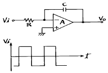
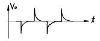
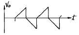
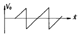
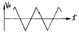
(정답률: 알수없음)
11. 1[MHz]을 입력으로 하는 분주 회로에서 출력이 250[KHz]을 가지려면 T Flip-Flop 몇 개가 필요한가?
- 1
- 2
- 3
- 4
(정답률: 알수없음)
12. 다음 중 데이터 선택회로라고도 불리우며 여러개의 입력 신호선(채널)중에서 하나를 선택하여 출력선(1개)과 연결하여주는 조합논리회로는 어느 것인가?
- Multiplexer
- Demultiplexer
- Encoder
- Decoder
(정답률: 알수없음)
13. 두 개의 2진수를 더하기 위한 반가산기(HA)회로는 1개의 X-OR와 1 개의 AND 게이트로 구성된다. 그러면 자리올림이 있는 덧셈에 사용하기 위한 전가산기(FA)의 회로구성은 다음 중 어느 것으로 구성하여야 하는가?
- 2개의 X-OR, 3개의 AND
- 2개의 X-OR, 2개의 AND, 1개의 OR
- 2개의 X-OR, 2개의 OR, 1개의 AND
- 1개의 X-OR, 2개의 AND, 2개의 OR
(정답률: 알수없음)
14. 출력전력 100[W]의 반송파를 50[%]변조 하였을 때의 양측파대의 전력은 몇[W]인가?
- 7.5[W]
- 3.5[W]
- 12.5[W]
- 4.5[W]
(정답률: 알수없음)
15. AM 변조 방식중 가장 효율이 좋은 방식은?
- 에미터 변조
- 베이스 변조
- 평형변조
- 콜렉터 변조
(정답률: 알수없음)
16. 그림과 같은 RC결합 CC증폭기 회로에서 전압이득은 약 얼마인가? (단, 입력저항 Ri = 2⑤[㏀], hie = 1.1[㏀])
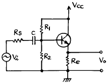
- 51
- 1.3
- 0.995
- 0.699
(정답률: 알수없음)
17. MOS 논리회로의 특징이 아닌 것은?
- 높은 입력 임피던스이다.
- 소비전력이 작다.
- 잡음여유도가 크다.
- TTL과의 혼용이 매우 용이하다.
(정답률: 알수없음)
18. 차동증폭기에서 차동신호에 대한 전압이득은 Ad이고 동상 신호에 대한 전압이득은 Ac이다. 이때 동상신호 제거비(CMRR)를 옳게 나타낸 식은?
- Ac+Ad/2
- Ad/Ac
- Ac/Ad
- Ac-Ad/2
(정답률: 알수없음)
19.
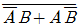
의 논리식을 간략화 하면?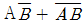
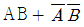
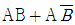
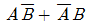
(정답률: 알수없음)
20. Base 변조회로(제곱 변조)의 특징이 아닌 것은?
- Base에 반송파와 신호파를 중첩시키는 방식이다.
- 변조 신호 전력이 적다.
- 변조도를 높이면 일그러짐이 크다.
- 피변조파 출력이 크다.
(정답률: 0%)
2과목: 정보통신 시스템
21. BSC 프로토콜에서 셀렉티브(selective) ARQ 방식이다. n번째에 ERROR가 발생시 어떻게 재송신하는가?
- n 번만
- n+1 번부터
- n 번부터 전부
- n-1 번부터 전부
(정답률: 알수없음)
22. 광대역 ISDN의 교환 및 다중화기술로서 개발되고 있는 교환기술은?
- APMBS
- ATM
- PABX
- X.31
(정답률: 알수없음)
23. ISDN에서 각 국(station)간에 채용하는 신호 방식은?
- D channel 신호방식
- 공통선 신호방식
- Tl 전송방식
- 채널결합 신호방식
(정답률: 알수없음)
24. 다음중 디지탈 전송방식의 특징이 아닌 것은?
- 중계기에 의한 신호 재생이 가능하므로 전송거리가 길어져도 질이 크게 저하되지 않는다.
- 잡음 및 혼신에 강하다.
- 전송 특성이 보내는 신호의 종류(음성, 화상, 데이타등)에 따라 다르다.
- 수신측에서 동기(同期)가 필요하다.
(정답률: 알수없음)
25. OSI 7계층 구조중에 서로 다른 기종의 컴퓨터 사이에 데이터 전송이 가능하게 하는 코드변환이나 포맷변환과 같은 기능을 수행하는 계층은?
- 네트워크층
- 세션층
- 프리젠테이션층
- 애프리케이션층
(정답률: 알수없음)
26. 전화망 음성통신에 사용되는 PCM 방식에서 표본화(sampling) 주파수는?
- 4kHz
- 8kHz
- 10kHz
- 16kHz
(정답률: 알수없음)
27. ISDN 서비스기능 중에서 국제표준화기구에서 권고하는 네트워크계층 1에서 계층 3까지의 기능을 제공하는 것은?
- bearer-service
- high layer
- tele-service
- telecommunication service
(정답률: 알수없음)
28. 데이터통신시스템에서 송신회선과 수신회선을 4선식으로 완전 분리하는 통신운용을 무슨 방식이라고 하는가?
- 단일회선방식
- 반이중방식
- 전이중방식
- 분리회선방식
(정답률: 알수없음)
29. HDLC 프레임을 구성하는 요소가 아닌 것은?
- 시작 및 종료 플래그
- 53 바이트 셀 필드
- 주소 필드
- FCS 필드
(정답률: 알수없음)
30. 매체 액세스 제어방식에 대한 LAN의 형태중 전송하기 전에 먼저 채널이 쉬고 있는지의 여부를 알아보고 채널이 휴지상태라고 감지될 때에만 채널상으로 자신의 데이터를 전송하는 방식은?
- CSMA/CD
- ALOHA
- Token bus
- Token ring
(정답률: 알수없음)
31. ISDN에서 텔레서비스의 속성이라 할 수 있는 것은?
- 정보 전달모드, 속도, 형태
- 정보 데이타의 구조
- 통신의 설정방식 및 형태
- 사용자 정보의 종류
(정답률: 알수없음)
32. 반송시스템에서 T1 CARRIER란? (단, CEPT를 기준으로 함)
- 1.544 Mbps
- 2.048 Mbps
- 4.096 Mbps
- 6.3 Mbps
(정답률: 알수없음)
33. 다음중 경로설정(routing) 기능을 담당하는 계층은?
- 물리계층(physical layer)
- 세션계층(session layer)
- 망계층(network layer)
- 전달계층(transport layer)
(정답률: 알수없음)
34. 차세대 인터넷 프로토콜인 IPv6에서 IP 주소는 몇 개의 비트로 구성되는가?
- 32
- 64
- 128
- 256
(정답률: 알수없음)
35. 브릿지(Bridge)의 활용용도로서 적합하지 않은 것은?
- 처리율(Throughput)을 개선하기 위해 LAN을 종속망(Subnetwork)들로 나눈다.
- 동종의 LAN들을 접속(Interconnect)한다.
- 다른 매체(Media)를 사용하는 LAN들을 접속한다.
- LAN들을 네트워크 계층(Network Layer)에서 접속한다
(정답률: 알수없음)
36. 다음중 공중전화망(PSTN)으로 2진데이타를 전송하기 위해 필요한 장치는?
- 증폭기
- 사설 교환기
- 모뎀
- 멀티플렉서
(정답률: 알수없음)
37. 데이터를 전송하는데 있어서 에러의 주된 원인이 되는 잡음은?
- 열 잡음
- 충격성 잡음
- 전자파 잡음
- 지연 잡음
(정답률: 알수없음)
38. 파장분할 다중전송 시스템(WDM)에서 가입자계 및 장거리 초대용량 전송을 하기위한 구비 조건을 열거한 설명으로 틀린 것은?
- 가능한한 좁은 대역에서 광섬유의 손실값이 낮을 것
- 각 파장 대역에서 발광하며 또 발광파장을 제어할 수 있는 발광원을 갖출 것
- 각 파장 대역에서 충분히 감도가 좋은 수광소자를 갖출 것
- 특성이 좋은 광합파기 및 광분파기를 갖출 것
(정답률: 알수없음)
39. 채널을 통해 보낼 수 있는 데이터량과 채널의 대역폭과의 관계는?
- 반비례
- 제곱근의 비례
- 1/3 비례
- 비례
(정답률: 알수없음)
40. 통신시스템에서 송신되는 정보의 보안을 위하여 정보를 분산 시키는 방법중에 해당되지 않는 것은?
- Direct Sequence Spread Spectrum
- Frequency Hopping
- Time Hopping
- Frequency Multiplexing
(정답률: 알수없음)
3과목: 정보통신 기기
41. 팩스(FAX)의 부호화 방식으로 사용되지 않는 것은?
- MH(Modified Huffman) 방식
- MR(Modified Read) 방식
- MMH(Modified MH) 방식
- MMR(Modified MR) 방식
(정답률: 알수없음)
42. 전화기의 통화회로를 구성하는 요소가 아닌것은?
- 유도선륜
- 벨(Bell)
- 송화기
- 수화기
(정답률: 알수없음)
43. 광통신시스템에서 광합파기 및 광분배기를 사용하는 광다중전송방식은?
- TDM
- WDM
- ADM
- FDM
(정답률: 알수없음)
44. 다음 설명에 해당되는 단말의 표시장치는?
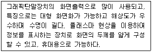
- LCD
- CRT
- PDP
- EC
(정답률: 알수없음)
45. 통신 제어 장치의 주요 기능이 아닌 것은?
- 통신 접속기능
- 정보 전송기능
- 입·출력 변환기능
- 회선의 감시 및 오류의 제어기능
(정답률: 알수없음)
46. 다음 중 무선송신기에서 꼭 필요하지 않은 것은?
- 전력증폭기
- 변조기
- 발진기
- 중간주파 증폭기
(정답률: 알수없음)
47. 다음 CATV와 CCTV에 관한 설명중 틀린 것은?
- CATV는 방송국과 수신자간에 정보교환이 가능하다.
- CATV를 이용해서 홈쇼핑을 할 수 있다.
- CCTV는 보통 많은 시청자가 가입을 위한 것이다.
- CCTV는 학교, 병원 등에서 VTR 또는 특정프로그램을 제공한다.
(정답률: 알수없음)
48. 고해상도와 높은 화질을 제공하는 차세대 영상 정보매체는?
- DVD
- DAC
- MIDI
- VCS
(정답률: 알수없음)
49. 인터넷 ISP(Internet Service Provider)에서 사용자 이름과 암호를 일괄 관리하기 위한 프로토콜은?
- DNS(Domain Name Server)
- PPP(Point To Point protocol)
- RADIUS(Remote Authentication Dial-in User Server)
- SNMP(Simple Network Management Protocol)
(정답률: 알수없음)
50. 하트레이 발진기의 특징이 아닌 것은?
- 발진 출력이 크다.
- 발진 주파수 가변이 쉽다
- LC 동조형 발진기이다.
- 초단파대의 높은 발진 주파수를 얻을 수 있다.
(정답률: 알수없음)
51. 개인용 컴퓨터를 멀티미디어 단말기로 사용하기 위한 필수적인 기능과 관계 적은 것은?
- CPU 등 고속 처리능력
- 대용량의 외부기억장치
- 오디오 기능
- 레이저 프린터
(정답률: 알수없음)
52. 다음 중 AM 통신기기에 비해 FM 통신기기에만 사용되는 기기는?
- 고역통과필터(HPF)
- 대역통과필터(BPF)
- 진폭 제한기(Limiter)
- 포락선 검파기
(정답률: 알수없음)
53. TV전파의 빈틈을 이용하여 뉴스, 일기, 교통정보 등의 문자와 도형신호를 TV영상신호와 동시에 방송하여 수신자로 하여금 원하는 정보를 선택하여 TV화면으로 볼 수 있는 것은?
- 비디오텍스
- 텔리텍스트
- 텔리텍스
- 팩시밀리
(정답률: 알수없음)
54. 데이터통신에서 전송속도가 다른 터미널간에, 통신이 가능한 회선방식은?
- 패킷교환회선
- 아날로그전용회선
- 디지털전용회선
- 전화교환회선
(정답률: 알수없음)
55. 팩시밀리(facsimile)의 송신주사에서 기계적 주사가 아닌것은?
- 원통주사
- 고체주사
- 원호면주사
- 평면주사
(정답률: 알수없음)
56. 라우터의 경로 제어 방식 중에 수신된 정보를 인접된 게이트웨이로 보내어 게이트웨이에 의해 착신지점을 정하도록 하는 방법은?
- direct routing
- indirect routing
- gateway routing
- routing solution
(정답률: 알수없음)
57. 동기를 잃지 않도록 신호의 스펙트럼이 채널의 대역폭에 가능한한 넓게 분포하도록 하여 수신측에서 등화기가 최적의 상태를 유지하도록 하는 기능을 담당하는 것은?
- 변복조기
- 스크램블러
- 여파기
- 디코더
(정답률: 알수없음)
58. 다음 중 비디오 텍스의 설명으로 틀린 것은?
- 쌍방향 통신을 한다.
- 축적 정보량이 비교적 많다.
- TV수신기와 인터페이스가 필요하다.
- 수신자수와 관계없이 동시 접속이 가능하다.
(정답률: 알수없음)
59. 다음중 포트공동이용기가 위치할 곳은?
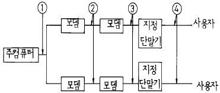
- ①
- ②
- ③
- ④
(정답률: 알수없음)
60. 다음 채널들은 정보통신시스템의 하드웨어에서 사용되고 있는 입출력 채널들이다. 해당되지 않는 것은?
- 주파수분할채널
- 셀렉터채널
- 블럭멀티플렉서채널
- 바이트멀티플렉서채널
(정답률: 알수없음)
4과목: 정보전송 공학
61. BSC(Binary Synchronous Communication)절차의 설명중 틀린 것은?
- Loop방식으로만 사용 가능하다.
- 반이중 통신방식을 사용한다.
- 완전한 오류검사가 어렵다.
- 사용코드에 제한이 있다.
(정답률: 알수없음)
62. 기수 패리티를 가진 해밍코드의 수신된 결과가 다음과 같을 때, 착오(error)는 몇번째 비트인가?
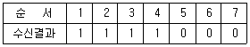
- 1
- 3
- 5
- 7
(정답률: 알수없음)
63. 광통신에 사용되는 발광소자중 다음 그림과 같이 전류와 광출력 특성을 나타내는 소자는?
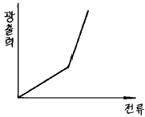
- LED(발광 다이오드)
- APD(애벌런치 포토 다이오드)
- PIN(핀 다이오드)
- LD(레이저 다이오드)
(정답률: 알수없음)
64. 전송 제어의 일종으로 모뎀과 같은 DCE를 감시 제어하는 것을 무엇이라 하는가?
- 흐름제어
- 회선제어
- 동기제어
- 에러제어
(정답률: 알수없음)
65. 다음중 전송로부호의 클럭주파수가 입력신호 주파수의 2배인 부호화 방식은?
- AMI
- HDB3
- CMI
- 4B3T
(정답률: 알수없음)
66. HDLC전송제어 절차에서 사용되는 것의 설명과 맞는 것은?
- 균형구성 : 정상응답모드 , 비동기응답모드
- 균형구성 : 비동기응답모드 , 비동기 균형모드
- 불균형구성 : 정상응답모드 , 비동기응답모드
- 불균형구성 : 비동기응답모드 , 비동기 균형모드
(정답률: 알수없음)
67. PCM 24채널(PCM T1프레임)방식에 대한 설명중 옳은 것은?
- 각 채널은 10개의 비트로 구성된다
- 프레임당 비트수는 193개이다
- 표본화 주파수는 4KHz이다
- 전송속도는 2.048 Mbit/sec이다
(정답률: 알수없음)
68. 다음의 델타(Δ ) 모듈레이션에 관한 설명 중 틀린 것은?
- 델타모듈레이션의 주된 장점은 저가로 간편한 시스템을 실현할 수 있다는 점이다.
- 델타모듈에이션에는 언제나 그래뉼러 잡음이 존재하는 단점이 있다.
- Slope Overload 문제를 해결하기 위해 스탭의 크기를 작게 나누어 주어야 한다.
- CVSD는 가변 스텝크기를 가지므로써 신호왜곡을 줄일 수 있다.
(정답률: 알수없음)
69. A 동축케이블의 특성 임피던스가 50[Ω], B 동축케이블의 특성 임피던스가 72[Ω]이다. A동축 케이블과 B 동축 케이블을 연결하고자 할 때 두 동축 케이블의 사이에 삽입되어야 할 동축 케이블의 특성 임피던스는 얼마가 되어야 하는가?
- 48[Ω]
- 54[Ω]
- 60[Ω]
- 68[Ω]
(정답률: 알수없음)
70. 광섬유의 흡수현상으로 주성분인 SiO2에 의한 흡수와 다른 조성성분에 의한 흡수를 들 수 있다. 흡수현상의 발생원인이 아닌 것은?
- 천이금속 이온에 의한 흡수손실
- OH기 이온에 의한 흡수손실
- 자외선 흡수손실
- 부정합 흡수손실
(정답률: 알수없음)
71. 다음중 원천부호화(Source Coding)의 목적을 바르게 기술한 것은?
- 오류의 검출을 수행한다.
- 오류의 정정을 수행한다.
- 디지털 신호를 아날로그로 변환한다.
- 아날로그 신호를 디지털화하여 압축한다.
(정답률: 알수없음)
72. 수신한 마이크로파를 검파하여 Video신호로 만든 다음 증폭한 후 다시 마이크로파로 변조하여 송신하는 중계방식은?
- 헤테로다인 중계방식
- 4주파수 중계방식
- 검파중계방식
- 직접중계방식
(정답률: 알수없음)
73. 아래의 신호공간 다이아그램이 나타내는 변조방식은?
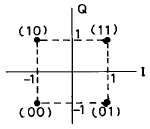
- ASK
- BPSK
- FSK
- QAM
(정답률: 알수없음)
74. 두 엔티티(entity)간에 교환되는 프로토콜 데이터 유니트(PDU)가 가지는 제어정보가 아닌 것은?
- 주소
- 에러검출 코드
- 프로토콜 제어정보
- 데이터형식
(정답률: 알수없음)
75. 다음의 에러제어 방식 중에서 복수의 에러를 정정할 수 있는 방식은?
- BCH 부호
- ARQ 방식
- CRC 부호
- 수평, 수직 PARITY
(정답률: 알수없음)
76. 그림(a)와 같은 구형파 입력파형에 대한 변조파형이 (b)와 같은 방식은?
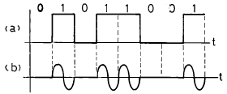
- ASK
- PSK
- FSK
- QAM
(정답률: 알수없음)
77. 다음 식에서 주파수와 주기는 얼마인가?
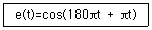
- 100[㎐], 11[ms]
- 60[㎐], 11[ms]
- 90[㎐], 0.011[sec]
- 180[㎐], 0.11[sec]
(정답률: 알수없음)
78. 전송로 등에 의한 레벨변동의 영향을 적게 받으며 심벌에러(Symbol error)도 우수한 디지털 광대역 변조방식은?
- 델타변조
- 진폭편이키잉(ASK)
- 주파수편이키잉(FSK)
- 위상편이키잉(PSK)
(정답률: 알수없음)
79. 직렬 전송 방식에 대한 설명 중 옳지 않은 것은?
- 회선의 전송 대역을 효율적으로 사용케 해준다.
- 비트 단위로 단일 선로를 통해 전송하는 방식이다.
- 대부분의 데이타 전송 시스템에서 채택하고 있다.
- 전송 매체의 비용이 비교적 많이 소요된다.
(정답률: 알수없음)
80. 통신로의 주파수 대역폭을 B, 신호전력을 S, 잡음 전력을 N이라고 할 때 통신 용량을 가르키는 식은?
- B log10(1+S/N)
- 2B log10(1+S/N)
- B log2(1+S/N)
- 2B log2(1+S/N)
(정답률: 알수없음)
5과목: 전자계산기일반 및 정보통신설비기준
81. 기간통신사업자로부터 전기통신회선설비를 임차하여 전기 통신 역무를 제공하는 사업은?
- 임차통신사업
- 자가통신사업
- 부가통신사업
- 대여통신사업
(정답률: 알수없음)
82. 기억장치로부터 명령이나 데이터를 읽을 때 다음 중 제일 먼저 하는 일은?
- OPERAND 지정
- OPERAND 인출
- 어드레스 지정
- 어드레스 인출
(정답률: 알수없음)
83. 기억장치에 기억되어 있는 정보의 내용 또는 그의 일부에 의해서 기억되어 있는 위치에 접근하여 정보를 읽어내는 장치는?
- 연상기억장치(Associative Memory)
- 가상기억장치(Virtual Memory)
- 캐쉬 메모리(Cache Memory)
- 보조기억장치(Auxiliary Memory)
(정답률: 알수없음)
84. 시스템 동작개시후 최초로 주기억장치에 프로그램을 load하는 것은?
- operating system
- bootstrap loader
- loader
- editor
(정답률: 알수없음)
85. 4096 × 8 비트의 ROM이 있을 때, 필요한 어드레스(address)핀은 몇 개가 필요한가?
- 10 개
- 11 개
- 12 개
- 13 개
(정답률: 알수없음)
86. 다음 중에서 코드의 역할이라고 할 수 없는 것은?
- 자료에 대한 분류, 조합
- 실행시간의 단축
- 개개의 데이터를 구분하기가 용이하다.
- 자료처리를 표준화, 단순화하는데 기여한다.
(정답률: 알수없음)
87. 전자계산기의 성능을 표시하는 단위는?
- BPS
- MIS
- MIPS
- TPS
(정답률: 알수없음)
88. 수치 자료 표현 방법에서 부동 소수점 표현(Floating point representation)을 가장 적절하게 설명한 것은?
- 부동 소수점 표현 방법에는 부호부, 가수부로 구분할 수 있다.
- 정밀도가 요구되는 과학 및 공학 또는 수학적인 응용에 주로 사용된다.
- 수를 표현하는 자리수는 고정 소수점에 비하여 적게 든다.
- 수 표현 방법이 고정 소수점에 비하여 간단하다.
(정답률: 알수없음)
89. 문자, 부호, 영상, 음향등 정보를 저장 처리하는 장치나그에 부수되는 입출력장치 또는 기타의 기기를 이용하여 정보를 송· 수신 또는 처리하는 전기통신설비를 무엇이라고 하는가?
- 단말장치
- 통신교환설비
- 정보통신망
- 정보통신설비
(정답률: 알수없음)
90. 자가전기통신설비를 설치하고자 하는 자는 어떤 절차를 거쳐야 하는가?
- 정보통신부장관의 허가를 받아야 한다.
- 정보통신부장관에게 신고만 하면 된다.
- 정보통신부장관의 승인을 받아야 한다.
- 정보통신부장관에게 등록만 하면 된다.
(정답률: 알수없음)
91. 정보통신망에 관련된 기술 및 기기의 호환성과 연동성을 확보하기 위하여 기술기준을 제정하여 시행한다.이 기술 기준을 제정하는 자는?
- 과학기술부장관
- 한국통신사장
- 정보통신부장관
- 한국전산원장
(정답률: 알수없음)
92. 정보통신회선의 사용자 또는 설비 이용자의 권리에 해당되지 아니하는 것은?
- 설치장소 변경 신청권
- 정보통신설비 사용권의 승계권
- 다른 단말기기 등의 접속사용 신청권
- 통신장애의 신고권
(정답률: 알수없음)
93. 정보교환회선 서비스를 받기 위하여 사용자가 설치해야할 필요가 없는 장비는?
- 단말기기
- 회선보호장치
- 변복조장치
- 과금장치
(정답률: 알수없음)
94. 전기통신기본법에 의하여 정보통신부장관이 행하는 기술지도의 대상 및 내용이 아닌 것은?
- 전기통신기자재 기술표준의 적용에 관한 사항
- 새로운 전기통신방식 및 기술의 유지보수에 관한사항
- 전기통신기자재의 생산기술 효율화에 관한 사항
- 전기통신기자재의 기능 및 특성의 개선에 관한 사항
(정답률: 알수없음)
95. 국내에서 음성통신의 음량에 관한 객관적 척도로서 통화품질기준을 규정할 때 사용되는 것은?
- 전송손실(transmission loss)
- 통화당량(reference equivalent)
- 명료도 등가 감쇠량(AEN)
- 음량정격(loudness rating)
(정답률: 알수없음)
96. 정보통신부장관이 전기통신기술의 진흥을 위하여 수립, 시행하는 시행계획에 포함되는 사항이 아닌 것은?
- 전기통신기술의 표준화
- 전기통신 기자재의 시험업무
- 새로운 전기통신방식의 채택
- 전기통신기술 연구기관 또는 단체의 육성
(정답률: 알수없음)
97. 데이터의 표현단위를 비트 수의 크기의 순서로 나열한 것은?
- 비트-니블-바이트-워드-필드-레코드-파일
- 비트-니블-바이트-워드-레코드-필드-파일
- 비트-니블-바이트-워드-레코드-파일-필드
- 비트-니블-바이트-레코드-워드-필드-파일
(정답률: 알수없음)
98. 전기통신설비의 건설 또는 보전의 공사를 하기 위하여 타인의 토지를 출입함으로서 피해자에게 어떠한 보상을 하여야 하는가?
- 손해배상
- 손실보상
- 실비보상
- 실비배상
(정답률: 알수없음)
99. 운영체계의 처리방식중 온라인개념으로 데이터의 처리요구가 오면 즉시처리하는 방식은?
- Batch processing
- Time sharing
- spooling
- Real time processing
(정답률: 알수없음)
100. 다음 중 MPU (마이크로 프로세서)에서 명령(instruction) 해독을 수행하는 것은?
- 프로그램 카운터(PC)
- 디코더(decoder)
- 엔코더(encoder)
- 명령 레지스터(instruction register)
(정답률: 알수없음)